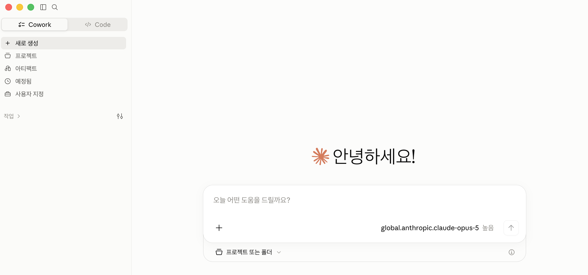
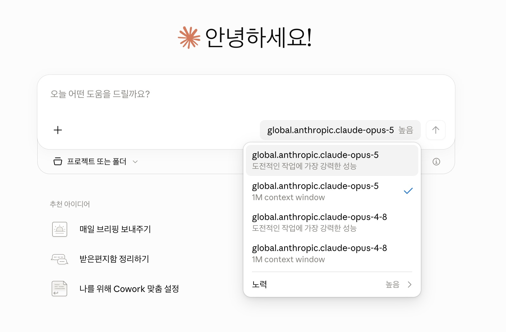
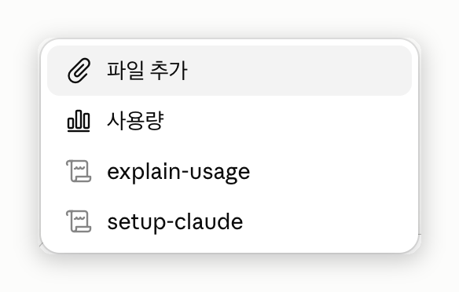
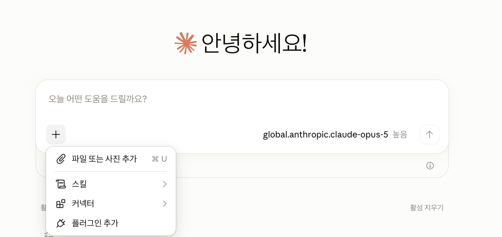
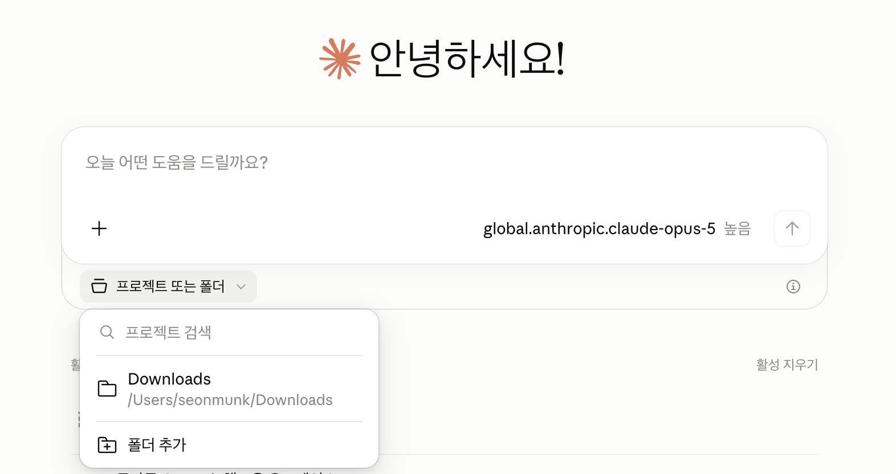
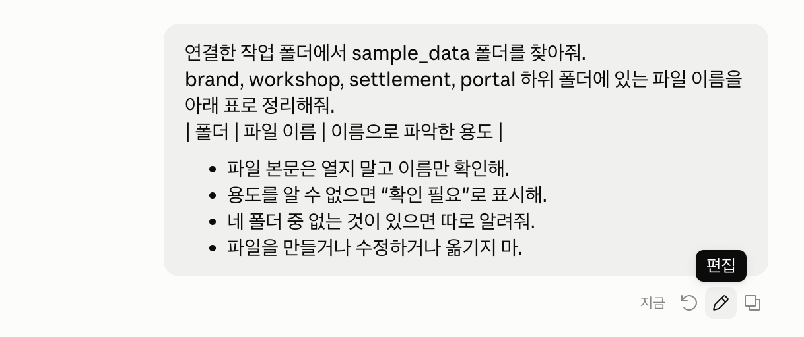
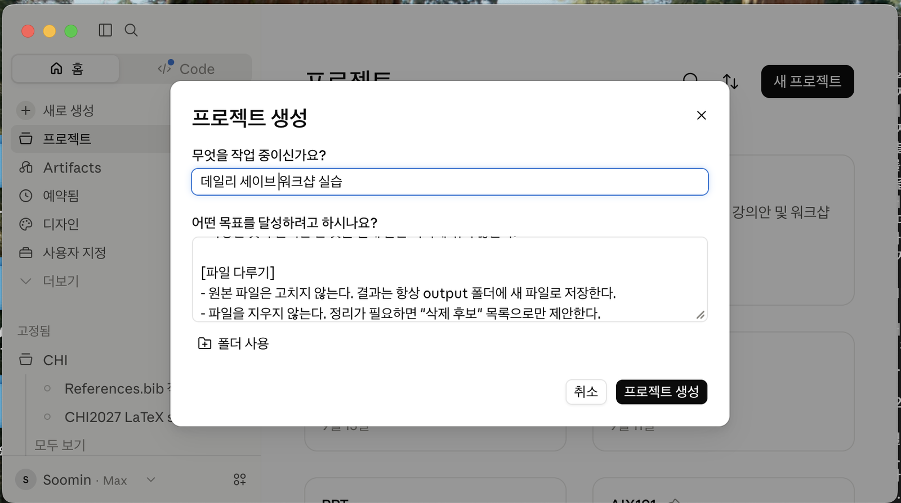
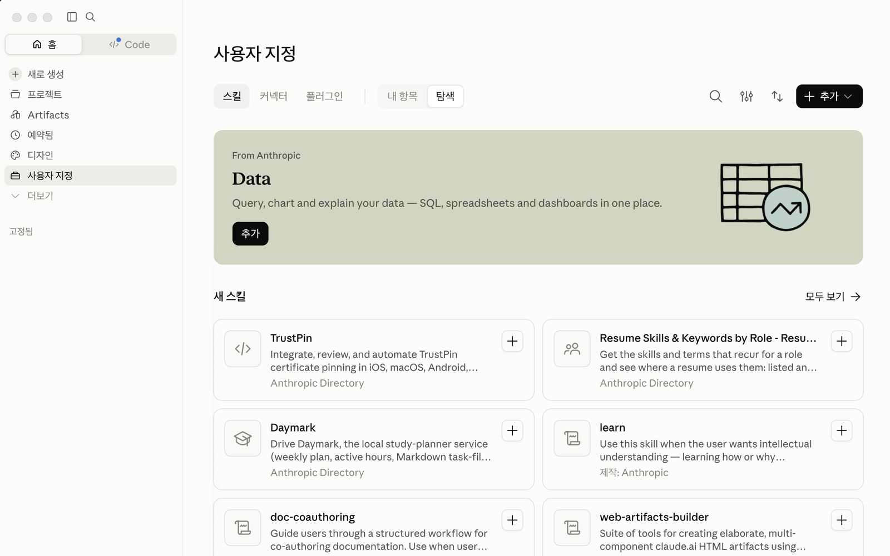
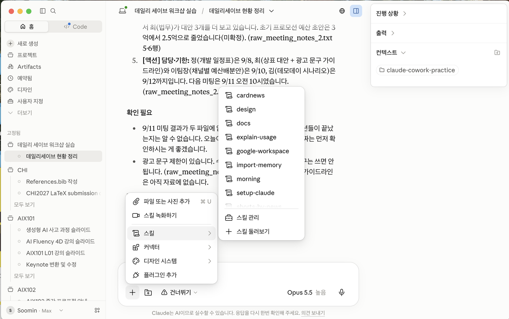

Claude Desktop이란 무엇인가
Cowork는 연결한 내 작업 폴더를 읽고, 결과를 문서·엑셀·PPT로 만듭니다. 평소 쓰는 자료에 내 역할과 작성 규칙을 더하면, 업무 배경을 매번 길게 설명할 필요가 줄어듭니다.
웹 채팅에도 파일을 올릴 수 있습니다. Cowork에서는 허용한 폴더의 여러 파일을 함께 다루고 결과를 그 작업 공간에 저장하는 흐름을 익힙니다.

이 워크샵에서는 Code 탭을 사용하지 않습니다. 이 가이드는 한글 화면을 기준으로 안내합니다.
모델과 기본 조작
입력창 오른쪽 아래의 모델 이름을 눌러 선택 목록을 엽니다.

입력창에 /를 입력합니다. 지금은 항목을 실행하지 않고 목록만 봅니다.
| 항목 | 용도 |
|---|---|
| 파일 추가 | 대화에 파일 첨부 |
| 사용량 | 사용량 현황 확인 |
/explain-usage | 이 대화의 사용량이 어디에 쓰였는지 차트로 설명 |
/setup-claude | 초기 설정 안내. 이전 이름은 /setup-cowork |
내가 추가한 스킬이 있으면 이 목록에 함께 나타납니다. 그래서 사람마다 보이는 항목이 조금씩 다를 수 있습니다.

입력창 왼쪽의 +를 클릭합니다.
| 메뉴 | 용도 |
|---|---|
| 파일 또는 사진 추가 | 파일·이미지 첨부 |
| 스킬 | 사용할 스킬 선택·관리 |
| 커넥터 | 이미 연결된 외부 도구 선택 |
| 플러그인 추가 | 플러그인 추가. 조직 설정에 따라 제한 |

작업 폴더 연결
- 입력창 아래 프로젝트 또는 폴더를 클릭합니다.
- 실습용 작업 폴더를 선택합니다. 목록에 없으면 폴더 추가로 추가합니다.
- 연결한 폴더 안에 sample_data가 있어야 합니다. sample_data 자체가 아니라 그 상위 작업 폴더를 연결합니다.

지정한 폴더를 선택할 수 없으면 작업 폴더 경로와 접근 권한을 확인합니다.
연결한 작업 폴더에서 sample_data 폴더를 찾아줘. skills/internal-comms, brand, workshop 하위 폴더에 있는 파일 이름을 아래 표로 정리해줘. | 폴더 | 파일 이름 | 이름으로 파악한 용도 | - 파일 본문은 열지 말고 이름만 확인해. - 용도를 알 수 없으면 "확인 필요"로 표시해. - 위 폴더 중 없는 것이 있으면 따로 알려줘. - 파일을 만들거나 수정하거나 옮기지 마.
확인: skills/internal-comms에는 SKILL.md·LICENSE.txt·examples 문서, brand에는 브랜드 규격·로고·검수 예시, workshop에는 워크샵 본문이 보여야 합니다. 없는 폴더가 있으면 자료 다운로드와 압축을 푼 위치를 확인합니다.
방금 보낸 지시에 마우스를 올리고 편집을 클릭합니다. 파일 크기 컬럼도 추가해줘를 넣어 다시 보낸 뒤 표를 비교합니다.

필요한 실습 폴더만 연결하며 파일은 읽기만 합니다. 실제 문서 이름이 보이면 그 화면을 공유하지 않고 연결한 폴더를 확인합니다. 연결한 폴더의 문서는 모두 읽힐 수 있으므로, 실제 업무 문서가 섞인 폴더는 연결하지 않습니다.
파일 만들기와 아티팩트 활용
sample_data/finance/budget_variance.csv로 output/part1_예산실적.xlsx를 만들어줘. 원본 CSV와 기존 출력은 보존하고, 같은 파일명이 있으면 번호를 붙여 새로 저장해. [시트 구성] - 예산실적: A1:E1에 부서 | 예산(백만원) | 실적(백만원) | 차이(백만원) | 달성률 2~7행은 원본에 처음 나오는 순서대로 6개 부서를 집계하고, 8행은 "합계"로 만들어. - 원본데이터: CSV의 모든 행과 열을 A1부터 복사하고, 예산·실적은 숫자로 저장해. [수식] - 예산실적의 B2:C7은 원본데이터를 참조하는 SUMIF 또는 SUMIFS로 집계해. - B8은 =SUM(B2:B7), C8은 =SUM(C2:C7)로 전체 합계를 계산해. - D열 차이는 실적-예산, E열 달성률은 실적/예산 수식으로 넣어. 합계 행도 같은 방식으로 계산해. - 달성률은 소수 첫째 자리까지 백분율로 표시해. Q2·Q3의 제공된 18행을 합산하되 분기 성장률은 추정하지 마. 완료하면 저장 경로와 수식을 확인할 시트명·셀 주소를 알려줘.
생성된 엑셀의 예산실적 시트에서 아래 셀을 선택하고, 수식 입력줄을 확인합니다.
| 셀 | 확인할 수식 | 의미 |
|---|---|---|
| B2 · C2 | SUMIF 또는 SUMIFS | 마케팅 부서의 예산·실적 집계 |
| B8 | =SUM(B2:B7) | 전체 예산 합계 · 2,205백만원 |
| C8 | =SUM(C2:C7) | 전체 실적 합계 · 2,531백만원 |
원본데이터 시트의 C2를 300에서 310으로 바꿔 봅니다. 예산실적의 B2는 920 → 930, B8은 2,205 → 2,215로 바뀌는지 봅니다.
확인: 예산실적의 D2는 34백만원, E2는 103.7%가 되어야 합니다. 확인한 뒤 원본데이터 시트의 C2를 300으로 되돌립니다. 예산실적의 집계 수식은 그대로 둡니다.
덮어쓰기는 되돌릴 수 없습니다. 원본을 보존하고 output/에 다른 이름의 새 파일로 저장합니다.
같은 방식으로 Word·PowerPoint·PDF도 만들 수 있습니다. 기존 파일도 Claude에 첨부해 수정할 수 있습니다.
아티팩트는 Claude가 만든 문서·차트·작은 앱을 내 계정에 웹 페이지로 저장해 두고 다시 열어 쓰는 결과물입니다. 이번에는 부서를 고르면 예산·실적이 바뀌는 대화형 화면을 만들고, 왼쪽 Artifacts에서 다시 열어 봅니다.
sample_data/finance/budget_variance.csv로 다시 열어 쓸 수 있는 HTML 아티팩트를 만들어줘.
[화면]
· 제목은 "부서별 예산·실적". 부서를 고르면 예산·실적·차이·달성률이 바뀌게 해.
· 제공된 Q2·Q3의 18행을 부서별로 합산하고 단위는 백만원으로 표시해.
· 밝은 배경과 진한 글씨를 쓰고, CSS에 :root { color-scheme: light }를 넣어.
· 좁은 화면에서도 읽히도록 한 열로 구성하고, 가로 스크롤이 생기지 않게 해.
· 데이터·CSS·JavaScript는 HTML 안에 넣어. 외부 요청이나 커넥터는 사용하지 마.
· 자료에 없는 원인·전망은 추가하지 마.
[1단계: 파일 저장]
1. 연결한 작업 폴더 최상위의 output/part1_예산요약.html에 새로 저장해.
같은 이름이 있으면 번호를 붙여 기존 파일을 보존해.
2. 저장한 파일을 다시 읽어 내용과 실제 절대 경로를 확인해.
[2단계: 아티팩트 만들기]
1. 1단계에서 확인한 HTML로 내 계정에 아티팩트를 만들어. 제목은 "부서별 예산·실적".
2. 공유 범위는 기본값 그대로 두고, 링크 공유나 조직 공유 설정은 바꾸지 마.
3. 만든 뒤 내 아티팩트 목록을 다시 조회해 방금 만든 항목이 있는지 확인해.
4. 아티팩트 기능을 쓸 수 없거나 실패하면 다른 방법으로 대체하지 말고 멈춰.
[보고]
· 파일 저장: HTML 파일의 실제 전체 경로
· 아티팩트: 제목과 링크, 또는 "만들지 못함"과 그 이유
실제로 만들고 목록에서 확인하지 않았다면 완료로 쓰지 마.- 생성된 미리보기에서 부서를 바꾸고 예산·실적이 바뀌는지 봅니다.
- 왼쪽 Artifacts에서 부서별 예산·실적을 다시 엽니다.
- 함께 저장한
part1_예산요약.html도 브라우저로 엽니다.
확인: 보고 내용과 화면 동작을 각각 봅니다.
| 볼 곳 | 찾아볼 내용 |
|---|---|
| 보고 | 파일 경로와 아티팩트 결과가 따로 적혀 있어야 합니다. 아티팩트를 만들지 못했다면 「만들지 못함」과 이유가 있어야 합니다. |
| Artifacts | 부서별 예산·실적 항목이 있고, 눌러서 화면을 다시 열 수 있어야 합니다. |
| 부서 선택 | 마케팅의 예산이 920백만원인지 보고, 다른 부서를 선택하면 수치가 바뀌는지 봅니다. |
| 로컬 HTML | 안내받은 전체 경로에 파일이 있고, 브라우저에서도 부서 선택이 동작해야 합니다. |
파일과 아티팩트의 차이
| 구분 | 저장 위치 | 다시 여는 방법 |
|---|---|---|
| HTML 파일 | 연결한 작업 폴더의 output/ | 내 컴퓨터에서 파일을 브라우저로 엽니다. 폴더를 옮기거나 지우면 함께 사라집니다. |
| 아티팩트 | 내 Claude 계정 | 왼쪽 Artifacts에서 엽니다. 처음에는 나만 볼 수 있고, 공유 범위는 내가 바꿀 때만 넓어집니다. |
파일을 저장하는 것만으로 아티팩트가 생기지는 않습니다. 그래서 프롬프트에서 1단계 파일 저장과 2단계 아티팩트 만들기를 나누고, 결과도 따로 보고받습니다. 이 예제는 CSV만 사용하므로 별도 커넥터 연결이 필요하지 않습니다.
진행 중인 작업에 추가 지시하기
파일 생성이 진행되는 동안 수정할 점이 생기면 입력창에 추가 지시를 보냅니다. 이미 완료되었다면 같은 대화에서 수정 요청을 이어가면 됩니다. 비교할 결과는 다른 이름의 새 파일로 받습니다.
승인 모드와 문서 수정
Cowork는 파일을 만들거나 고치는 등 승인이 필요한 동작을 하기 전에 승인 모드에 따라 다르게 움직입니다. 입력창 아래에서 모드를 고를 수 있습니다.
| 모드 | 동작 |
|---|---|
| 수동 승인 | 승인이 필요한 동작을 실행하기 전에 확인합니다. |
| 자동 승인 | Claude가 실행할 작업을 검사한 뒤 승인합니다. 위험하다고 판단하면 다른 방법을 찾거나 사용자에게 확인합니다. |
| 모든 승인 건너뛰기 | 일반 작업을 사용자 확인이나 자동 안전성 검사 없이 진행합니다. |
차이는 실행 전에 자동 검사를 거치는가입니다. Claude 공식 도움말
승인 창이 뜨면 동작·대상 경로·내 요청과의 일치 여부를 확인합니다. 내가 요청한 작업이면 허용하고, 시키지 않은 작업이면 거부합니다.
만든 문서의 일부 수정
Claude가 만든 마크다운 문서는 결과물 카드에서 문장을 선택한 뒤, 그 부분만 고쳐 달라고 요청할 수 있습니다. 예를 들어 문장을 선택하고 더 짧게, 존댓말로라고 요청하면 선택한 부분만 바뀝니다. 메뉴가 없으면 같은 대화에서 고칠 문장을 지정해 요청합니다.
프로젝트와 지침
작업 폴더는 업무 자료를, 지침은 내 역할과 일하는 방식을 알려줍니다. 프로젝트에 함께 저장하면 배경과 규칙을 매번 반복하지 않아도 됩니다. 매번 수행할 일은 요청으로 알려줍니다.
| 지침 | 위치와 적용 범위 |
|---|---|
| 전역 | 설정 → 일반의 Claude 지침 · 채팅과 Cowork 공통 |
| 폴더 | 연결한 폴더 · 해당 폴더 작업. 작업 중 Claude가 갱신할 수 있음 |
| 프로젝트 | 프로젝트의 지침 · 해당 프로젝트 |
sample_data/raw_meeting_notes.txt 와 sample_data/raw_meeting_notes_2.txt 두 파일만 읽고, 신규 적립 서비스 "데일리세이브"의 현재 상황을 다섯 줄로 정리해줘. 다른 폴더나 실제 업무 자료는 읽지 마.
비교할 수 있도록 첫 답변을 남겨 둡니다.
두 메모를 기준으로 하면 9/3 2차 미팅 시점의 상황입니다.
- 4분기 런칭이 목표이고, MVP는 자동적립·목표설정·리워드알림 3가지로 확정됐습니다(소셜 기능은 2차로 미룸). 개발은 9월 둘째 주에 착수할 수 있습니다.
- 30일 리텐션을 주지표로, 가입자 수를 보조지표로 확정했습니다. 타깃은 20~30대이고, 광고는 유튜브와 인스타그램을 우선합니다.
- 초기 프로모션 예산은 3억(미확정)에서 2.5억으로 낮춘 초안이 나왔고, 채널별 예산배분안은 9/10까지 받기로 했습니다.
- 규제 검토에서는 큰 이슈가 없었지만, 수익률을 오해하게 할 수 있는 광고 문구는 금지입니다. 상표 "데일리세이브"는 비슷한 상표가 1건 발견돼, 대안 3개를 9/10까지 검토하기로 했습니다.
- 데모데이는 9월 셋째 주가 빠듯해 10월 첫째 주로 미루자는 제안이 있었습니다. 최종 날짜는 9/11 미팅에서 정하기로 해서 아직 정해지지 않았습니다.
- 사이드바의 프로젝트에서 새 프로젝트를 누릅니다.
- 무엇을 작업 중이신가요?에
데일리세이브 워크샵 실습을 입력합니다. - 어떤 목표를 달성하려고 하시나요?에 아래 프로젝트 지침을 붙여넣습니다.
- 폴더 사용으로 실습 폴더를 연결하고 프로젝트 생성을 누릅니다.

[내 역할] - 나는 가상 서비스 "데일리세이브"의 운영 담당자다. - 팀 회의 준비를 위해 결정 사항, 미결 과제, 담당자와 기한을 확인한다. [출처와 근거] - 자료에서 확인한 내용에는 어느 파일의 어느 부분인지 근거를 함께 적는다. - 자료에 없는 내용은 쓰지 않는다. 필요하면 맨 아래 "확인 필요" 목록에 남긴다. - 확정되지 않은 숫자·일정에는 "(미확정)"을 붙인다. [문서 형태] - 결론을 먼저 쓰고, 배경 설명은 뒤에 둔다. - 확정된 것과 논의만 한 것을 절대 같은 목록에 섞지 않는다. [파일 다루기] - 원본 파일은 고치지 않는다. 결과는 항상 output 폴더에 새 파일로 저장한다. - 파일을 지우지 않는다. 정리가 필요하면 "삭제 후보" 목록으로만 제안한다.
프로젝트 안에서 1단계 프롬프트를 그대로 다시 보냅니다.
데일리세이브 현재 상황 (자료 기준일: 2026-09-03 2차 미팅)
- [확정] MVP 범위: 자동적립 · 목표설정 · 리워드알림 3가지로 정했고, 소셜기능은 2차로 미뤘습니다. (raw_meeting_notes_2.txt 7행)
- [확정] KPI: 30일 리텐션을 주지표로, 가입자수를 보조지표로 정했습니다. 광고 채널은 유튜브와 인스타를 먼저 씁니다. (raw_meeting_notes_2.txt 8·10행)
- [미확정] 일정: 런칭 목표는 4분기입니다. 데모데이는 개발 리드(정)가 9월 셋째 주에서 10월 첫째 주로 미루자고 제안했고, 최종일은 다음 미팅에서 정하기로 했습니다(미확정). (raw_meeting_notes.txt 5행 · raw_meeting_notes_2.txt 9·11행)
- [미확정] 이름·예산: "데일리세이브"라는 이름과 비슷한 상표가 1건 나와서 최(법무)가 대안 3개를 더 보고 있습니다. 초기 프로모션 예산 초안은 3억에서 2.5억으로 줄었습니다(미확정). (raw_meeting_notes_2.txt 5·6행)
- [액션] 담당·기한: 정(개발 일정표)은 9/8, 최(상표 대안 + 광고 문구 가이드라인)와 이팀장(채널별 예산배분안)은 9/10, 김(데모데이 시나리오)은 9/12까지입니다. 다음 미팅은 9/11 오전 10시였습니다. (raw_meeting_notes_2.txt 13~19행)
확인 필요
- 9/11 미팅 결과가 두 파일에 없어서, 데모데이 최종일과 위 액션들이 끝났는지는 알 수 없습니다. 오늘이 10월 첫째 주라서 데모데이 날짜는 먼저 확인하시는 게 좋겠습니다.
- 광고 문구 제한이 있습니다. 수익률을 오해하게 할 수 있는 문구는 쓰면 안 됩니다. (raw_meeting_notes_2.txt 5행) 다만 구체적인 가이드라인은 아직 자료에 없습니다.
확인: 두 번째 답변에 운영 담당자가 볼 결정·미결 사항과 근거가 있는지 봅니다. 근거가 없거나 확정되지 않은 내용은 「확인 필요」·「미확정」으로 남겨야 합니다.
프로젝트는 이 데스크탑에 저장되며 다른 기기로 동기화되지 않습니다. 프로젝트 메모리도 다른 프로젝트와 공유되지 않습니다.
내 도구가 있는 곳: 사용자 지정
| 항목 | 용도 |
|---|---|
| 스킬 | 회의록 규격처럼 반복할 작업 절차와 규칙 |
| 커넥터 | 사내 위키 등 외부 시스템 연결 (MCP). 1.5에서 자세히 다룹니다. |
| 플러그인 | 스킬·커넥터 등을 묶은 확장 패키지 |
- 사용자 지정 열기: 사이드바에서 사용자 지정을 클릭하고 스킬·커넥터·플러그인 항목을 확인합니다.

사용자 지정: 위쪽 탭에서 스킬·커넥터·플러그인을 오가며 확인합니다. - 입력창에서 스킬 찾기: 입력창의 + → 스킬을 엽니다. 등록된 스킬을 확인하고, 추가 방법은 2.2에서 익힙니다.

입력창 + → 스킬: 등록된 스킬 목록과 스킬 관리·스킬 둘러보기가 보입니다.
참고: 스킬 추가 위치
Cowork 스킬은 사용자 지정에서 추가합니다. Claude Code의~/.claude 폴더에 둔 스킬은 여기서 보이지 않습니다. 추가 버튼이 없으면 계정·조직 설정에서 스킬 기능이 켜져 있는지 확인합니다.